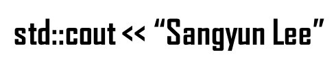
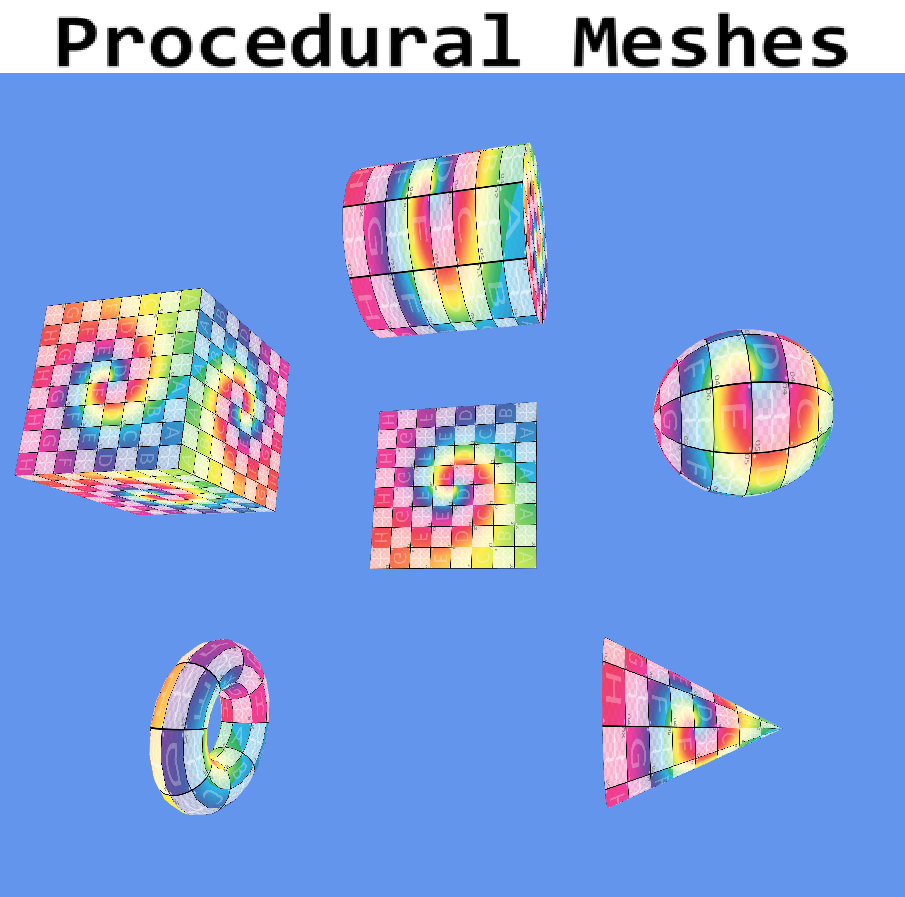

3D Graphics

Procedural Geometric Modeling is the second assignment in CS250 Computer Graphics II at DigiPen Institute of Technology. The goal was to implement run-time procedural mesh generation for six geometric primitives — Plane, Cube, Sphere, Torus, Cylinder, and Cone — using parametric equations and a shared stacks/slices tessellation model. Each mesh is normalized to unit dimensions ([-0.5, 0.5]) and supports adjustable LOD via ImGui sliders.
(col−0.5, row−0.5, 0), normal (0,0,1), UV (col, row).position / radius.(pos − center) / r.
Supports partial-arc rendering via start_angle / end_angle.normalize(sinα, 0.5, cosα).constexpr float R = 0.5f to anonymous namespace;
all functions reuse the same build_index_buffer() and UV convention.The most non-obvious part was add_cap()'s winding order. The top cap (center_y > 0) must wind CCW when viewed from above, while the bottom cap must wind CCW when viewed from below — flipping which of the two adjacent ring vertices comes first in each triangle. Getting this wrong produces caps that cull away entirely, leaving open-ended cylinders with no visible error message.
The convert_to_lines_pattern() function was also subtle: it first tries to consume pairs of triangles (6 indices forming a quad), then falls back to individual triangles. Mixing these two patterns happens at the seam between the main stacks/slices body and the cap fan — recognizing that the cap indices don't satisfy the quad pattern condition was key to getting clean wireframe rendering for capped shapes.